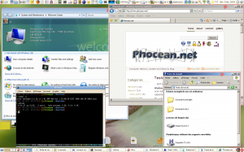

I have just upgraded WMWare from version 6.04 to 6.5, and I have to say that it has very nice new features.
The first surprising thing was the file I downloaded. It is now not anymore a tar.gz archive but a .bundle file.
After downloading, as root, just make it executable or start it with sh :
% sh VMware-Workstation-6.5.0-118166.x86_64.bundle
It now starts a graphic installer, that takes care of everything. All the compilation process is now hidden to the user.
I was expecting the compilation to fail and that I would have to look for a patch to run on my edge Linux kernel. Indeed, I just compiled 2.6.26 kernel (64 bits) a few days ago.
But nothing like that. the process went smoothly.
However, I was still prudent. Even after a compiling, previous versions almost always required some patch to get full networking to work.
So I gave a try and launch one of my virtual machines. Surprise : all worked out of the box !
For the first time, I even did not need any vmware-any-any patch or any network patched vmmon and vmnet modules to get wifi networking operational.
I also quickly noticed some very nice and fancy features :
- 3D graphics support
- more devices supported : fingerprint reader device, audio driver for Vista, …
- a graphical virtual network settings editor : this utility had been for ages on the Windows version and finally will make your easier on Linux
At last, but not least, the Unity display mode.
Though I am not a Mac user, I believe this can be compared to VMWare Fusion. Anyway, it allows you to display the virtual machines programs within your X session.
Look at this screenshot :

The result is quite spectacular. On my Gnome desktop, I am now able to display some windows from Windows XP and Windows Vista.
Well, this is not yet perfectly smooth or artifact free, but this is already really usable and responsive enough to be used intensively.
Another limit is the operating system support. So far, among my virtual machines, I was able to do it with Windows systems but not Open Solaris for instance.
There must have been more improvements, more or less visible, that I am not aware of. I won’t go for a full review.
I just wanted to insist that if you are a VMWare user, you really should consider to upgrade for the complete support of the latest kernel and the Unity feature.
It seems that VMWare has listened to the Linux users, or at least is taking it more seriously. Not that they are nice, but the competitors are close (Virtual box, KVM, Xen…) !


{kind=link}